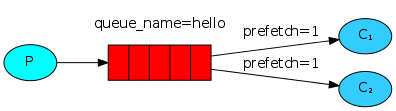

2 RabbitMQ消息队列实现任务分发¶

任务分发¶
任务分发是把多个任务扔进队列，然后分发给多个worker来执行。之所以要用队列来实现，是因为任务处理需要一定时长，如果一直等待会导致阻塞，而异步把任务排到队列里，就能加快分发，在取出任务时，也能根据各个worker负载情况，均衡分配。尤其是在Web应用中，HTTP连接短暂就会断开，异步处理就特别适用。排队比蜂拥而至办事效率更高。
实现任务分发，新建NewTask.java发送消息：
String message = String.join(" ", argv);
channel.basicPublish("", "hello", null, message.getBytes());
System.out.println(" [x] Sent '" + message + "'");
用message来模拟任务。
新建Worker.java接收消息：
DeliverCallback deliverCallback = (consumerTag, delivery) -> {
String message = new String(delivery.getBody(), "UTF-8");
System.out.println(" [x] Received '" + message + "'");
try {
doWork(message);
} finally {
System.out.println(" [x] Done");
}
};
boolean autoAck = true; // acknowledgment is covered below
channel.basicConsume(TASK_QUEUE_NAME, autoAck, deliverCallback, consumerTag -> { });
private static void doWork(String task) throws InterruptedException {
for (char ch: task.toCharArray()) {
if (ch == '.') Thread.sleep(1000);
}
}
doWrok()模拟任务处理，用.来表示时长，hello...就代表要处理3秒。
然后在2个shell启动2个worker：
## shell 1
java -cp $CP Worker
## => [*] Waiting for messages. To exit press CTRL+C
## shell 2
java -cp $CP Worker
## => [*] Waiting for messages. To exit press CTRL+C
发送5条任务：
## shell 3
java -cp $CP NewTask First message.
## => [x] Sent 'First message.'
java -cp $CP NewTask Second message..
## => [x] Sent 'Second message..'
java -cp $CP NewTask Third message...
## => [x] Sent 'Third message...'
java -cp $CP NewTask Fourth message....
## => [x] Sent 'Fourth message....'
java -cp $CP NewTask Fifth message.....
## => [x] Sent 'Fifth message.....'
worker的处理情况如下：
java -cp $CP Worker
## => [*] Waiting for messages. To exit press CTRL+C
## => [x] Received 'First message.'
## => [x] Received 'Third message...'
## => [x] Received 'Fifth message.....'
java -cp $CP Worker
## => [*] Waiting for messages. To exit press CTRL+C
## => [x] Received 'Second message..'
## => [x] Received 'Fourth message....'
任务是循环调度的，worker1总是处理奇数序列的任务，worker2总是处理偶数序列的任务。
消息确认¶
RabbitMQ支持消息确认，consumer在接收到消息并处理后，会回传一个ack给producer，告诉RabbitMQ这条消息已经接收成功了。它的好处是能防止worker挂掉而丢失消息，因为假如producer没有收到消息确认，它会保留这条消息，重新发送给其他worker。消息确认过程默认有30秒的超时时间，超过30秒没有收到消息确认，就会重试。
在代码中有个默认设置：
boolean autoAck = true;
channel.basicConsume(TASK_QUEUE_NAME, autoAck, deliverCallback, consumerTag -> { });
autoAck表示自动确认，在消息发送出去以后，就自动确认了。这就起不到防止消息丢失的效果，所以通常会设置为：
boolean autoAck = false;
消息持久化¶
RabbitMQ重启以后，所有的队列和消息都会丢失，消息持久化能保留这些数据，在重启后恢复所有的队列和消息。
队列持久到用到了durable参数：
boolean durable = true;
channel.queueDeclare("task_queue", durable, false, false, null);
需要注意的是，修改队列的参数必须重新命名新的队列，因为RabbitMQ不支持对现有队列的参数进行修改。
消息持久化用到了MessageProperties：
import com.rabbitmq.client.MessageProperties;
channel.basicPublish("", "task_queue",
MessageProperties.PERSISTENT_TEXT_PLAIN,
message.getBytes());
均衡调度¶
均衡调度是根据worker负载情况来合理分配任务。前面实现的任务分发是循环调度的，worker1总是处理奇数序列的任务，worker2总是处理偶数序列的任务。假如奇数序列的任务始终比偶数序列的任务繁忙，处理起来耗时长，那么就会导致worker1一直繁忙而worker2处于空闲。这显然不是很合理。
这是因为RabbitMQ默认只是盲目的将第n个消息发给第n个consumer，而不会去管有多少个未确认的消息数量。
RabbitMQ提供了prefetchCount参数来实现均衡调度：
int prefetchCount = 1;
channel.basicQos(prefetchCount);
通过设置prefetchCount为1，RabbitMQ一次只会给一个worker分发一条消息，假如某个worker比较繁忙，那么只会等它处理完成回传消息确认（Message acknowledgment）后，才会分发新消息给它。

完整代码¶
NewTask.java
import com.rabbitmq.client.Channel;
import com.rabbitmq.client.Connection;
import com.rabbitmq.client.ConnectionFactory;
import com.rabbitmq.client.MessageProperties;
public class NewTask {
private static final String TASK_QUEUE_NAME = "task_queue";
public static void main(String[] argv) throws Exception {
ConnectionFactory factory = new ConnectionFactory();
factory.setHost("localhost");
try (Connection connection = factory.newConnection();
Channel channel = connection.createChannel()) {
channel.queueDeclare(TASK_QUEUE_NAME, true, false, false, null);
String message = String.join(" ", argv);
channel.basicPublish("", TASK_QUEUE_NAME,
MessageProperties.PERSISTENT_TEXT_PLAIN,
message.getBytes("UTF-8"));
System.out.println(" [x] Sent '" + message + "'");
}
}
}
Worker.java
import com.rabbitmq.client.Channel;
import com.rabbitmq.client.Connection;
import com.rabbitmq.client.ConnectionFactory;
import com.rabbitmq.client.DeliverCallback;
public class Worker {
private static final String TASK_QUEUE_NAME = "task_queue";
public static void main(String[] argv) throws Exception {
ConnectionFactory factory = new ConnectionFactory();
factory.setHost("localhost");
final Connection connection = factory.newConnection();
final Channel channel = connection.createChannel();
channel.queueDeclare(TASK_QUEUE_NAME, true, false, false, null);
System.out.println(" [*] Waiting for messages. To exit press CTRL+C");
channel.basicQos(1);
DeliverCallback deliverCallback = (consumerTag, delivery) -> {
String message = new String(delivery.getBody(), "UTF-8");
System.out.println(" [x] Received '" + message + "'");
try {
doWork(message);
} finally {
System.out.println(" [x] Done");
channel.basicAck(delivery.getEnvelope().getDeliveryTag(), false);
}
};
channel.basicConsume(TASK_QUEUE_NAME, false, deliverCallback, consumerTag -> { });
}
private static void doWork(String task) {
for (char ch : task.toCharArray()) {
if (ch == '.') {
try {
Thread.sleep(1000);
} catch (InterruptedException _ignored) {
Thread.currentThread().interrupt();
}
}
}
}
}